1060G pressure pump electric control
- Path
- Descriptions > 10 ENGINE > 1060 DIESEL FUEL INJECTION > 1060G pressure pump electric control
- Kind
- system description
- Applies to
- engines: 1.9 JTD 8v , 1.9 JTD 16v, 2.4 JTD 10v, 2.4 JTD 20v; all production periods
- Interactive page
- https://sloeber94.github.io/elrnDB-a156/en/#/3232879
Applies to: engines: 1.9 JTD 8v , 2.4 JTD 10v; all production periods
VIEW OF ASSEMBLY
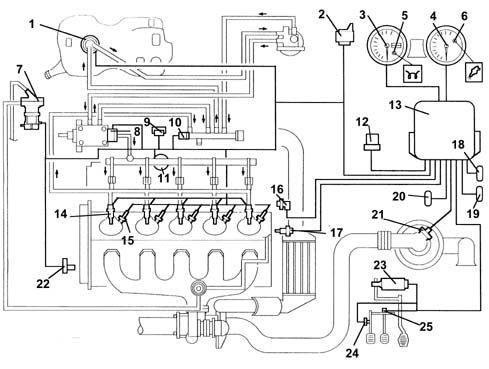
1, Auxiliary electric fuel pump 2, Heater plugs control unit 3, Speedometer 4, Rev counter 5, Heater plugs waring light 6, Engine Check warning light 7, E.G.R. modulating valve 8, Pressure regulator 9, Excess pressure sensor 10, Fuel temperature sensor 11, Fuel pressure sensor 12, Relay 13, Injection control unit 14, Fuel injectors (4 for 1.9 JTD; 5 for 2.4 JTD) 15, Heater plugs (4 for 1.9 JTD; 5 for 2.4 JTD) 16, Rpm sensor 17, Water temperature sensor 18, Climate control connector 19, Diagnostic connector 20, Alfa Romeo CODE connector 21, Flow meter 22, Timing sensor 23, Accelerator pedal potentiometer 24, Clutch pedal switch 25, Brake pedal switch
EDC-15C Common Rail injection control unit
It is fitted in the passenger compartment on the passenger side panel. The control unit is the 'flash EPROM' type, i.e. reprogrammable from the outside without intervening on the hardware.
The injection control unit integrates the absolute pressure sensor.
PINS
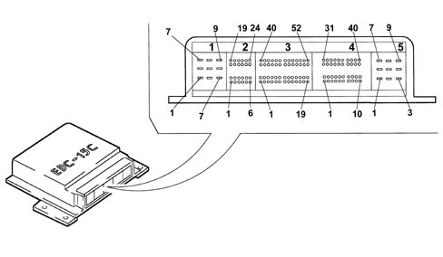
1-01, (+) Battery from the main relay (10 A) 1-02, N.C. 1-03, N.C. 1-04, (-) Battery 1-05, (-) Battery 1-06, (-) Battery 1-07, (+) Battery from the main relay 1-08, (+) Battery from the main relay 1-09, N.C. 2-01, Heater plugs timer signal 2-02, Clutch pedal switch 2-03, Air conditioner engagement request 2-04, N.C. 2-05, N.C. 2-06, N.C. 2-07, N.C. 2-08, Brake pedal switch 2-09, N.C. 2-10, N.C. 2-11, N.C. 2-12, N.C. 2-13, Supply controlled by the ignition 2-14, N.C. 2-15, N.C. 2-16, N.C. 2-17, N.C. 2-18, N.C. 2-19, N.C. 2-20, N.C. 2-21, N.C. 2-22, N.C. 2-23, Request to engage 1st fan speed 2-24, N.C. 3-01, Fuel temperature sensor earth 3-02, N.C. 3-03, N.C. 3-04, N.C. 3-05, Supply for sensor 1 - accelerator pedal 3-06, N.C. 3-07, N.C. 3-08, Earth for sensor 2 - accelerator pedal 3-09, Signal for sensor 2 - accelerator pedal 3-10, Signal for sensor 1 - accelerator pedal 3-11, N.C. 3-12, N.C. 3-13, Immobilizer 3-14, N.C. 3-15, N.C. 3-16, N.C. 3-17, N.C. 3-18, N.C. 3-19, N.C. 3-20, Enablement from 4 stage pressure switch 3-21, Supply for sensor 2 - accelerator pedal 3-22, N.C. 3-23, Earth for sensor 1 - accelerator pedal 3-24, Fuel temperature sensor signal 3-25, N.C. 3-26, Vehicle speed signal 3-27, N.C. 3-28, Tester connection (line K) 3-29, N.C. 3-30, Electric fuel pump supply 3-31, N.C. 3-32, N.C. 3-33, N.C. 3-34, N.C. 3-35, N.C. 3-36, N.C. 3-37, Supply for E.G.R. modulator 3-38, Operation of heater plugs timer (+) 3-39, N.C. 3-40, Rpm sensor signal 3-41, N.C. 3-42, N.C. 3-43, Heater plugs warning light 3-44, N.C. 3-45, Request to engage 2nd fan speed 3-46, Main relay 3-47, N.C. 3-48, Engine Check warning light 3-49, Water temperature warning light 3-50, E.G.R. actuator 3-51, Operation of heater plugs timer (-) 3-52, Electric fuel pump 4-01, Flow meter supply 4-02, Rpm sensor earth 4-03, Rpm sensor signal 4-04, Flow meter earth 4-05, N.C. 4-06, Supercharging pressure sensor signal 4-07, Excess pressure sensor earth 4-08, Excess pressure sensor supply 4-09, N.C. 4-10, N.C. 4-11, Flow meter supply 4-12, Rpm sensor supply 4-13, Fuel pressure sensor supply (5 V) 4-14, Flow meter signal 4-15, Quadrinary on 4-16, N.C. 4-17, Rpm sensor screening 4-18, N.C. 4-19, N.C. 4-20, N.C. 4-21, Fuel pressure sensor 4-22, N.C. 4-23, Air temperature sensor signal 4-24, Fuel pressure sensor signal 4-25, N.C. 4-26, Rpm sensor signal 4-27, Engine temperature sensor earth 4-28, N.C. 4-29, N.C. 4-30, N.C. 4-31, Pressure regulator 4-32, Air conditioning system relay 4-33, N.C. 4-34, Fuel pressure sensor earth 4-35, N.C. 4-36, Engine temperature sensor signal 4-37, N.C. 4-38, N.C. 4-39, N.C. 4-40, N.C. 5-01, N.C. (1.9 JTD) 5-01, Supply for injector for cylinders 2 and 5 (2.4 JTD) 5-02, Supply for injector for cylinders 1 and 4 (1.9 JTD) 5-02, N.C. (2.4 JTD) 5-03, Operating signal for injector for cyl. 4 (1.9 JTD) 5-03, Operating signal for injector for cyl. 5 (2.4 JTD) 5-04, Supply for injector for cylinders 2 and 3 (1.9 JTD) 5-04, Supply for injector for cylinders 1, 3 and 4 (2.4 JTD) 5-05, Operating signal for injector for cylinder 3 (1.9 JTD) 5-05, Operating signal for injector for cylinder 1 (2.4 JTD) 5-06, N.C. 5-06, N.C. 5-07, Operating signal for injector for cyl. 2 (1.9 JTD) 5-07, Operating signal for injector for cyl. 4 (2.4 JTD) 5-08, N.C. (1.9 JTD) 5-08, Operating signal for injector for cyl. 3 (2.4 JTD) 5-09, Operating signal for injector for cyl. 1 (1.9 JTD) 5-09, Operating signal for injector for cyl. 2 (2.4 JTD)
RPM sensor
It is fitted on the engine block, where it faces the phonic wheel located on the crankshaft.
It is of the inductive type, i.e. it functions by means of the variation in the magnetic field generated by the passage of the teeth of the phonic wheel (60-2 teeth).
The fuel injection control unit uses the rpm sensor to:
- determine the speed of rotation
- determine the angle of the crankshaft.
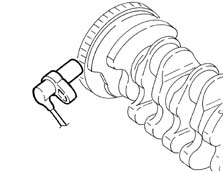
Operation
The passage from full to empty, due to the presence or absence of the tooth, causes a variation in the magnetic flow which is sufficient to generate an induced alternating voltage, resulting from the count of teeth located on a ring (or phonic wheel).
The frequency and range of the voltage sent to the electronic control unit provides it with the angular speed of the crankshaft.
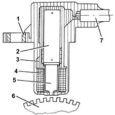
1, Brass bush 2, Permanent magnet 3, Plastic sensor casing 4, Coil winding 5, Polar core 6, Toothed or phonic wheel 7, Coaxial two-wire cable or electrical connection
The specified gap for obtaining correct signals, between the end of the sensor and the phonic wheel, must be between 0.8 and 1.5 mm.
This gap is not adjustable, so if a value outside the tolerance range is measured, check the condition of the sensor and the phonic wheel.
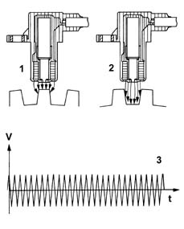
1, Maximum magnetic flow 2, Minimum magnetic flow 3, Trend of induced alternating voltage
For operating checks, see test 1056B multi-point injection system (mpi) .
Timing sensor.
Hall effect; it is mounted on the cylinder head and 'facing' the exhaust camshaft pulley.
This pulley comprises a gap which enables the timing sensor to indicate the engine's timing position.
The fuel injection control unit uses the timing sensor's signal to find out the TDC at the end of compression.
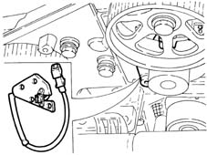
Operation
A semiconducting layer, through which current passes, immersed in a perpendicular magnetic field (force lines perpendicular to the current direction), generates at its ends a difference in potential known as Hall voltage.
If the intensity of the current remains constant, the voltage generated only depends on the intensity of the magnetic field; the intensity of the field simply has to vary periodically to produce a modulated electrical signal, whose frequency is proportional to the speed with which it changes magnetic field.
To obtain this change, a metal ring (the inside of the pulley) with a gap passes through the sensor.
As it moves, the metal part of the ring covers the sensor, blocking the magnetic field, resulting in a low output signal; viceversa, level with the gap and so when the magnetic field is present, the sensor generate a high signal.
This signal, together with the rpm and TDC signal, allows the control unit to recognize the cylinders and determine the injection point.
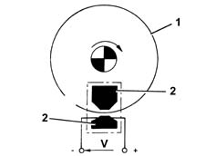
1, Pulley ring 2, Magnetic material
Pressure relief sensor
It is fitted at the centre of the inlet chamber and has the task of notifying the injection control unit to:
- regulating the injection pressure
- regulating the injection duration.
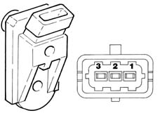
Pins 1, 5 V (from ECU) 2, Earth 3, Output signal
For operating checks, see test 1060G pressure pump electric control .
Coolant temperature sensor
It is fitted on the thermostatic cup and measures the temperature of the coolant by means of an NTC thermistor which has a negative resistance coefficient.
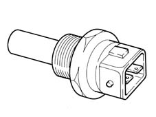
The sensor is produced using semiconductor technology, so if the temperature of the sensor increases as the temperature of the coolant increases, the resistance decreases.
As the variation in resistance is not linear, for the same temperature increment, it is higher for low temperatures than for high temperatures.
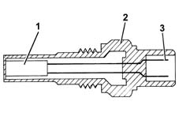
1, NTC resistor 2, Sensor body 3, Supply connector
For operating checks, see test 1056B multi-point injection system (mpi) .
Air flow meter
The flow meter is located on the air inlet duct and is of the 'hot film' type.
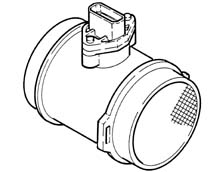
The intake air temperature sensor is built into the flow meter.
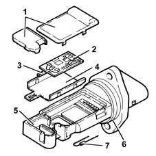
1, Covers 2, Electronic card 3, Sensor 4, Support plate 5, Support 6, O-ring 7, Temperature sensor
Operation
The operating principle is based on a heated diaphragm located in a measuring duct through which the intake air entering the engine flows.
The hot film diaphragm is kept at a constant temperature (about 120° C above the incoming air temperature) by the heating resistor.
The air mass passing through the measuring duct tends to draw heat from the diaphragm, so to keep the latter at a constant temperature, some current must flow through the resistor.
This current is measured by a suitable Wheatstone bridge.
The current is therefore proportional to the mass of flowing air.
The flow meter directly measures the air mass (not volume), thus eliminating problems of temperature, altitude, pressure, etc.
For operating checks, see test 1056B multi-point injection system (mpi) .
Accelerator pedal potentiometer
The accelerator pedal is fitted with two integrated potentiometers:
- one main potentiometer
- one safety potentiometer
The injection control unit implements the following 'recovery' strategies
- if there is a fault with one of the two potentiometers, a butterfly opening of up to 40° is allowed for a long period
- if both of the potentiometers fail completely, the butterfly opening is excluded.
The accelerator pedal is adjusted by excluding the end of travel (this position should not be exceeded).
Operation
The sensor consists of a casing (1), fixed to the pedals by a flange, which contains a shaft (2), in an axial position, connected to the two potentiometers (3).
There is a coil spring on the shaft which guarantees the correct resistance to the pressure whilst a second spring ensures the return on release.
Operating range from 0° to 70°; mechanical stop at 88°.
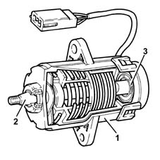
For operating checks see test 1056B multi-point injection system (mpi) .
Applies to: engines: 1.9 JTD 8v ; production: da 04/98 a 02/99; only with equipment: 115 CV
Accelerator pedal with built-in potentiometer.
Construction features
The sensor consists of a casing, secured to the accelerator pedal mount, which contains a shaft, in an axial position, connected to two potentiometers: one main one and one safety one.
There is a coil spring on the shaft which guarantees the correct resistance to the pressure whilst a second spring ensures the return on release.
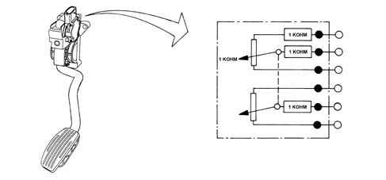
Operattion
The position of the accelerator pedal is transformed into an electrical voltage signal and is sent to the fuel injection control unit by the potentiometer connected to the accelerator pedal.
The accelerator pedal position signal is processed together with the information relating to the rpm, to obtain the fuel injection times and relevant pressure.
Applies to: engines: 1.9 JTD 8v , 2.4 JTD 10v; all production periods
Fuel temperature sensor
It is fitted on the return manifold and measures the temperature of the fuel by means of an NTC thermistor with a negative resistance coefficient.
For operation, refer to 'Engine coolant temperature sensor'
Fuel pressure sensor
It is fitted in the centre of the 'rail' fuel distribution manifold and has the task of supplying the injection control unit with a 'feedback' signal for:
- regulating the injection pressure
- regulating the injection duration.
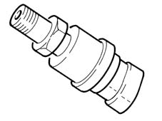
Applies to: engines: 1.9 JTD 8v , 2.4 JTD 10v; all production periods; only with equipment: Euro 3
CONSTRUCTION FEATURES
View of assembly
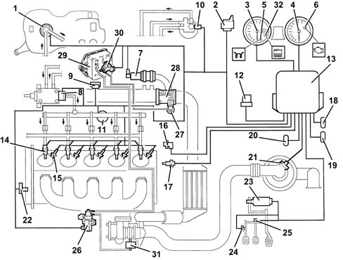
1, Auxiliary electric fuel pump 2, Heater plugs control unit 3, Speedometer 4, Rev counter 5, Heater plugs waring light 6, Engine Check warning light 7, Electric E.G.R. valve 8, Pressure regulator 9, Excess pressure sensor 10, Fuel temperature sensor 11, Fuel pressure sensor 12, Relay 13, Injection control unit 14, Fuel injectors (4 for 1.9 JTD; 5 for 2.4 JTD) 15, Heater plugs (4 for 1.9 JTD; 5 for 2.4 JTD) 16, Rpm sensor 17, Water temperature sensor 18, Climate control connector 19, Diagnostic connector 20, Alfa Romeo CODE connector 21, Flow meter 22, Timing sensor 23, Accelerator pedal potentiometer 24, Clutch pedal switch 25, Brake pedal switch 26, VGT solenoid 27, Pneumatic valve on throttle body 28, Throttle body 29, Vacuum reservoir 30, Pneumatic valve control solenoid on throttle body 31, Variable geometry turbocharger vane actuator 32, Water in fuel warning light
EDC-15C Common Rail injection control unit
It is fitted in the passenger compartment on the passenger side panel. The control unit is the 'flash EPROM' type, i.e. reprogrammable from the outside without intervening on the hardware.
The injection control unit integrates the absolute pressure sensor.
Pins
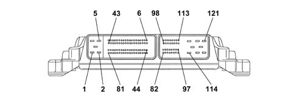
1, Earth 2, Earth 3, Earth 4, Actuator supply 5, Injector/ECU supply 6, Not connected 7, Not connected 8, Not connected 9, Not connected 10, Not connected 11, Immobilizer 12, Not connected 13, Main relay 14, Heater plugs warning light 15, Throttle solenoid actuator for control on switch-off 16, E.G.R. actuator 17, VGT solenoid actuator 18, Air conditioner relay 19, Request to switch on fans 2nd speed 20, Request to switch on fans 1st speed 21, Engine Check warning light 22, Spark plug activation 23, Not connected 24, Fuel pump relay 25, Not connected 26, Not connected 27, Not connected 28, Not connected 29, Not connected 30, Not connected 31, Not connected 32, Not connected 33, Not connected 34, Not connected 35, Not connected 36, Not connected 37, Not connected 38, Not connected 39, Not connected 40, Not connected 41, Not connected 42, Not connected 43, Not connected 44, Not connected 45, Not connected 46, Not connected 47, Rpm signal for panel 48, K line 49, Vehicle speed signal 50, Not connected 51, Quadrinary on 52, Trinary on 53, Not connected 54, Not connected 55, Not connected 56, Not connected 57, Not connected 58, Key sense 59, Brake switch signal 60, Request to switch on air conditioner 61, Clutch pedal switch 62, Plug diagnosis 63, Not connected 64, Not connected 65, Not connected 66, Not connected 67, Not connected 68, Not connected 69, Not connected 70, Not connected 71, Not connected 72, Not connected 73, Not connected 74, Not connected 75, Not connected 76, Accelerator 1 pedal earth 77, Accelerator 1 pedal signal 78, Accelerator 1 pedal power supply 79, Accelerator 2 pedal earth 80, Accelerator 2 pedal signal 81, Accelerator 2 pedal power supply 82, Fuel temperature sensor - pin 1 83, Fuel temperature sensor - pin 2 84, Water temperature sensor - pin 1 85, Water temperature sensor - pin 2 86, Air flow meter - pin 1 87, Not connected 88, Air flow meter - pin 3 89, Air flow meter - pin 5 90, Fuel pressure sensor - pin 3 91, Fuel pressure sensor - pin 2 92, Fuel pressure sensor - pin 1 93, Turbocharging pressure sensor - pin 1 94, Turbocharging pressure sensor - pin 3 95, Turbocharging pressure sensor - pin 2 96, Not connected 97, Air flow meter - pin 4 98, Not connected 99, Rpm sensor - pin 1 100, Rpm sensor - pin 2 101, Rpm sensor - pin 3 102, Fuel supply timing sensor 102, Timing sensor - pin 1 104, Timing sensor - pin 2 105, Not connected 106, Not connected 107, Not connected 108, Diesel pressure regulator 109, Diesel pressure regulator 110, Water temperature warning light 111, Diesel filter relay 112, Not connected 113, Not connected 114, Cylinder 4 injector control 115, Cylinder 5 injector control (connected only for 5 cylinders) 116, Not connected 117, Cylinders 1-2 injectors shared 118, Cylinders 3-4-5 injectors shared 119, Cylinder 1 injector control 120, Cylinder 2 injector control 121, Cylinder 3 injector control
Fuel temperature sensor
It is integrated in the fuel assembly heater (previously it could be dismantled individually and it was mounted on the fuel return manifold), and it measures the fuel temperature via an NTC thermistor with negative resistance coefficient.
For operation, refer to 'Engine coolant temperature sensor'
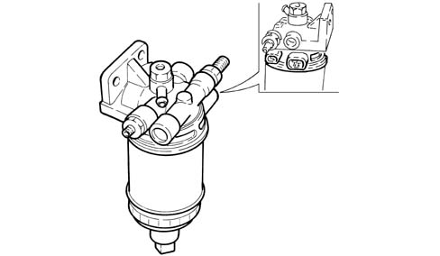
Applies to: engines: 1.9 JTD 16v; all production periods
COMPONENT DESCRIPTION
Injection control unit (EDC-15C Common Rail)
It is fitted to the right side of the engine bay. The control unit is the 'flash EPROM' type, i.e. reprogrammable from the outside without intervening on the hardware.
The injection control unit integrates the absolute pressure sensor.
PIN-OUT
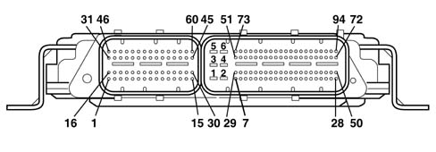
CONNECTOR A 1, Cylinder 3 injector positive 2, Cylinder 2 injector positive 3, Not connected 4, Fuel pressure regulator positive 5, Not connected 6, Not connected 7, Not connected 8, Fuel pressure sensor negative 9, Not connected 10, Not connected 11, Timing sensor positive 12, Engine rpm sensor negative 13, Supercharging sensor positive 14, Not connected 15, Turbo pressure electro-pneumatic valve negative 16, Cylinder 1 injector positive 17, Cylinder 4 injector positive 18, Not connected 19, Not connected 20, Timing sensor negative 21, Not connected 22, Not connected 23, Intake air temperature and supercharging pressure sensor negative 24, Not connected 25, Not connected 26, Not connected 27, Engine rpm sensor positive 28, Fuel pressure sensor positive 29, Flow meter positive 30, Not connected 31, Cylinder 2 injector negative 32, Not connected 33, Cylinder 4 injector negative 34, Fuel pressure regulator negative 35, Insufficient engine oil pressure sensor signal 36, Not connected 37, Air temperature sensor on flow meter signal 38, Not connected 39, Not connected 40, Supercharging sensor signal 41, Coolant temperature sensor negative 42, Air flow meter signal 43, Fuel pressure sensor signal 44, Flow meter negative 45, Not connected 46, Cylinder 3 injector negative 47, Cylinder 1 injector negative 48, Not connected 49, Not connected 50, Timing sensor signal 51, Not connected 52, Not connected 53, Intake air temperature sensor signal 54, Not connected 55, Not connected 56, Not connected 57, Not connected 58, Coolant temperature sensor signal 59, Cut out throttle solenoid valve actuator negative 60, EGR solenoid valve negative CONNECTOR B 1, Power supply from main relay 2, Control unit earth 3, Not connected 4, Control unit earth 5, Main relay power supply 6, Control unit earth 7, Not connected 8, Accelerator pedal potentiometer track 2 signal 9, Accelerator pedal potentiometer track 1 signal 10, Fuel temperature signal negative 11, Fuel temperature sensor signal 12, Not connected 13, Not connected 14, Not connected 15, Not connected 16, Not connected 17, Brake pedal switch signal 18, Not connected 19, Not connected 20, Not connected 21, Not connected 22, Not connected 23, Not connected 24, Not connected 25, Line K 26, Not connected 27, Not connected 28, Key ON signal 29, Air conditioning compressor relay 30, Accelerator pedal potentiometer track 1 negative 31, Accelerator pedal potentiometer track 2 signal 32, Not connected 33, Not connected 34, Not connected 35, Not connected 36, Not connected 37, Not connected 38, Cruise Control resume 39, Not connected 40, Not connected 41, Not connected 42, Quadinary signal 43, Not connected 44, Not connected 45, Accelerator pedal potentiometer track 1 positive 46, Accelerator pedal potentiometer track 2 positive 47, Immobilizer line W 48, Engien rpm signal output to robotized gearbox 49, Not connected 50, Not connected 51, Not connected 52, Feedback signal from heater plugs control unit 53, Not connected 54, Request to engage climate control from control button 55, Not connected 56, Cruise Control positive 57, Not connected 58, Not connected 59, Not connected 60, Not connected 61, Low C-CAN from ABS control unit 62, High C-CAN from ABS control unit 63, Not connected 64, Not connected 65, Not connected 66, Not connected 67, Not connected 68, Fuel filter heater relay operation 69, Engine cooling fan 2nd speed engagement relay 70, Not connected 71, MIL warning light 72, Main relay activation 73, Not connected 74, Water in fuel filter signal 75, Not connected 76, Not connected 77, Cruise control on/off 78, Signal for cruise control speed decrease 79, Clutch switch signal 80, Brake pedal 2nd switch signal (only for versions with cruise control) 81, Quadinary signal 82, Not connected 83, Low C CAN to body computer 84, High C CAN to body computer 85, Not connected 86, Not connected 87, Not connected 88, Not connected 89, Not connected 90, Engine cooling fan 1st speed engagement relay 91, Fuel pump relay operation 92, Not connected 93, Heater plugs engagement
RPM SENSOR
Specifcations
It is fitted on the cylinder block/crankcase and 'faces' the flywheel on the crankshaft.
It is of the inductive type, i.e. it functions by means of the variation in the magnetic field generated by the passage of the teeth of the flywheel (60-2 teeth).
The fuel injection control unit uses the rpm sensor to:
- determine the rotation speed;
- determine the angle of the crankshaft.
Operation
The passage from full to empty, due to the presence or absence of the tooth, causes a variation in the magnetic flow which is sufficient to generate an induced alternating voltage, resulting from the count of teeth located on a ring (or phonic wheel).
The frequency and range of the voltage sent to the electronic control unit provides it with the angular speed of the crankshaft.
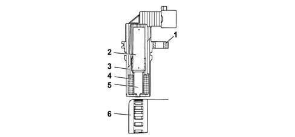
1 - Brass bush 2 - Permanent magnet 3 - Plastic sensor casing 4 - Coil winding 5 - Polar core 6 - Ring gear or flywheel 7 - Coaxial two-wire cable or electrical connection
The distance (gap) for obtaining correct signals, between the end of the sensor and the flywheel, should be between 0.8 and 1.5 mm.
This gap is not adjustable, so if a value outside the tolerance range is measured, check the condition of the sensor and the flywheel.
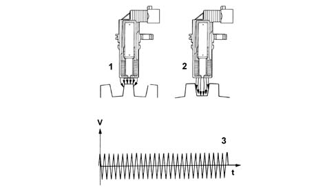
1 - Maximum magnetic flow 2 - Minimum magnetic flow 3 - Induced alternating voltage trend
CAM ANGLE SENSOR
Specifcations
Hall effect; it is mounted on the cylinder head and 'facing' the camshaft pulley.
This pulley comprises a tooth which enables the timing sensor to indicate the engine's timing position.
The fuel injection control unit uses the timing sensor's signal to find out the TDC at the end of compression.
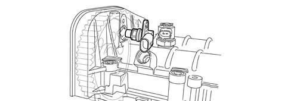
Operation
A semiconducting layer, through which current passes, immersed in a perpendicular magnetic field (force lines perpendicular to the current direction), generates at its ends a difference in potential known as Hall voltage.
If the intensity of the current remains constant, the voltage generated only depends on the intensity of the magnetic field; the intensity of the field simply has to vary periodically to produce a modulated electrical signal, whose frequency is proportional to the speed with which it changes magnetic field. To obtain this change, a tooth on the inside of the pulley moves close to the sensor.
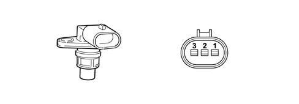
1 - Earth 2 - Signal 3 - Supply
INTAKE AIR TEMPERATURE AND EXCESS PRESSURE SENSOR
Specifcations
The intake air temperature and excess pressure sensor is a component which is designed to measure the pressure and the temperature of the air inside the inlet manifold.
It is fitted on the intake manifold has the task of notifying the injection control unit to:
- regulate the pressure of the variable geometry turbine in order to ensure optimum engine performance in all operating conditions.
- regulating injection duration.
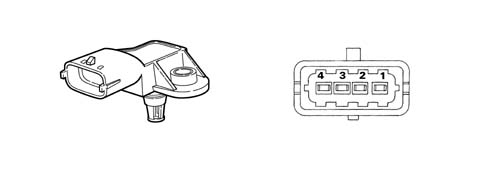
1 - Earth 2 - Air temperature signal 3 - 5 Volt (from ECU) 4 - Supercharging pressure output signal
ENIGINE COOLANT TEMPERATURE SENSOR
Specifcations
It is fitted on the thermostatic cup and measures the temperature of the coolant by means of an NTC thermistor which has a negative resistance coefficient.
One NTC thermistor sends the signal to the injection control unit whilst the other one sends the signal to the temperature gauge and warning light in the instrument panel.
The sensor is based on semiconductor technology; so if the sensor temperature increases as the water temperature increases, the resistance decreases.
As the variation in resistance is not linear, for the same temperature increment, it is higher for low temperatures than for high temperatures.
AIR FLOW METER WITH AIR TEMPERATURE SENSOR INTEGRATED
Specifcations
The flow meter is located on the air inlet duct and is of the 'hot film' type.
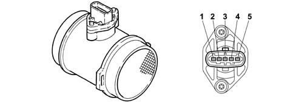
1 - Air temperature sensor output signal 2 - Maintenance current 3 - Negative 4 - 5V supply 5 - Flow meter output signal
The intake air temperature sensor is built into the flow meter.
Operation
The operating principle is based on a heated diaphragm located in a measuring duct through which the intake air entering the engine flows.
The hot film diaphragm is kept at a constant temperature (about 120° C above the incoming air temperature) by the heating coils.
The air mass passing through the measuring duct tends to draw heat from the diaphragm, so to keep the latter at a constant temperature, some current must flow through the resistor.
This current is measured by a suitable Wheatstone bridge.
The current is therefore proportional to the mass of flowing air.
Fuel temperature sensor
Specifications
It is built into the fuel heater and measures the temperature of the coolant by means of an NTC thermistor which has a negative resistance coefficient.
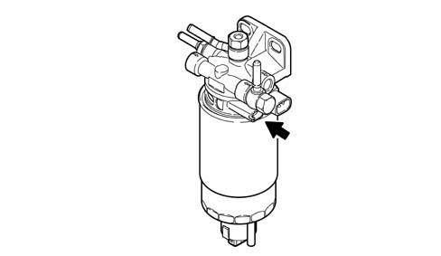
The sensor is based on semiconductor technology; so if the sensor temperature increases as the fuel temperature increases, the resistance decreases.
As the variation in resistance is not linear, for the same temperature increment, it is higher for low temperatures than for high temperatures.
FUEL PRESSURE SENSOR
Specifcations
It is fitted at the end of the 'rail' fuel distribution manifold and has the task of supplying the injection control unit with a 'feedback' signal to:
- regulate the injection pressure
- regulating injection duration.
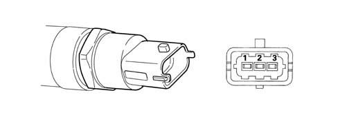
1 - Earth 2 - Output signal 3 - Supply
ACCELERATOR PEDAL POTENTIOMETER
Construction features
The sensor consists of a casing, secured to the accelerator pedal mount, which contains a shaft, in an axial position, connected to two potentiometers: one main one and one safety one.
There is a coil spring on the shaft which guarantees the correct resistance to the pressure whilst a second spring ensures the return on release.
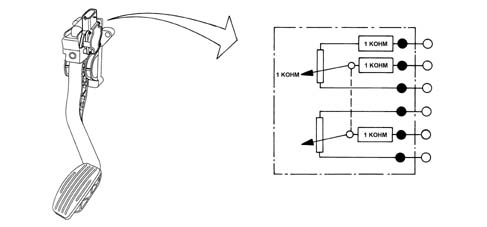
Operation
The position of the accelerator pedal is transformed into an electrical voltage signal and is sent to the fuel injection control unit by the potentiometer connected to the accelerator pedal.
The accelerator pedal position signal is processed together with the information relating to the rpm, to obtain the fuel injection times and relevant pressure.
Applies to: engines: 2.4 JTD 20v; all production periods
COMPONENT DESCRIPTION
ENGINE MANAGEMENT CONTROL UNIT (COMMON RAIL EDC-16C8)
Specifcations
It is fitted in the left front part under the wheel arch. The engine management control unit memory is the 'flash EPROM' type, i.e. reprogrammable from the outside without intervening on the hardware.
The engine management control unit incorporates the absolute pressure sensor.
Pin-out
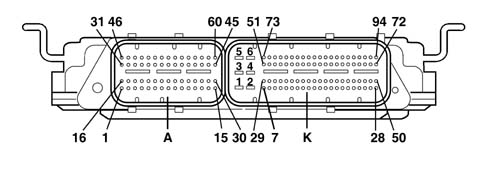
CONNECTOR A 1, Cylinder 3 injector positive 2, Cylinder 2 injector positive 3, Not connected 4, Fuel pressure regulator positive 5, Not connected 6, Not connected 7, Not connected 8, Fuel pressure sensor negative 9, Not connected 10, Not connected 11, Timing sensor positive 12, Engine rpm sensor negative 13, Supercharging sensor positive 14, Not connected 15, Not connected 16, Cylinder 1 injector positive 17, Cylinder 4 injector positive 18, Cylinder 5 injector positive 19, Not connected 20, Timing sensor negative 21, Not connected 22, Not connected 23, Intake air temperature and supercharging pressure sensor negative 24, Not connected 25, Not connected 26, Not connected 27, Engine rpm sensor positive 28, Fuel pressure sensor positive 29, Flow meter positive 30, Not connected 31, Cylinder 2 injector negative 32, Not connected 33, Cylinder 4 injector negative 34, Fuel pressure regulator negative 35, Not connected 36, Not connected 37, Air temperature sensor on flow meter signal 38, Not connected 39, Not connected 40, Supercharging sensor signal 41, Coolant temperature sensor negative 42, Air flow meter signal 43, Fuel pressure sensor signal 44, Flow meter negative 45, Not connected 46, Cylinder 3 injector negative 47, Cylinder 1 injector negative 48, Cylinder 5 injector negative 49, Not connected 50, Timing sensor signal 51, Not connected 52, Not connected 53, Intake air temperature sensor signal 54, Not connected 55, Not connected 56, Not connected 57, Not connected 58, Coolant temperature sensor signal 59, Cut out throttle solenoid valve actuator negative 60, EGR solenoid valve negative CONNECTOR K 1, Power supply from main relay 2, Control unit earth 3, Not connected 4, Control unit earth 5, Main relay power supply 6, Control unit earth 7, Turbo pressure management electro-pneumetic valve negative 8, Accelerator pedal potentiometer track 2 signal 9, Accelerator pedal potentiometer track 1 signal 10, Fuel temperature signal negative 11, Fuel temperature sensor signal 12, Not connected 13, Not connected 14, Not connected 15, Not connected 16, Not connected 17, Normally open brake pedal switch signal 18, Not connected 19, Not connected 20, Not connected 21, Not connected 22, Not connected 23, Not connected 24, Not connected 25, Line K 26, Not connected 27, Fuel consumption signal 28, Key ON signal 29, Air conditioning compressor relay 30, Accelerator pedal potentiometer track 1 negative 31, Accelerator pedal potentiometer track 2 signal 32, Not connected 33, Not connected 34, Not connected 35, Not connected 36, Not connected 37, Not connected 38, Cruise Control resume 39, Not connected 40, Not connected 41, Not connected 42, Quadrinary signal 43, Not connected 44, Not connected 45, Accelerator pedal potentiometer track 1 positive 46, Accelerator pedal potentiometer track 2 positive 47, Body computer W line 48, Engien rpm signal output to robotized gearbox 49, Not connected 50, Not connected 51, Not connected 52, Feedback signal from heater plugs control unit 53, Not connected 54, Request to engage climate control from control button 55, Not connected 56, Cruise Control positive 57, Not connected 58, Not connected 59, Not connected 60, Not connected 61, Low C-CAN from ABS control unit 62, High C-CAN from ABS control unit 63, Not connected 64, Not connected 65, Not connected 66, Not connected 67, Not connected 68, Fuel filter heater relay operation 69, Engine cooling fan 2nd speed engagement relay 70, Not connected 71, MIL warning light 72, Main relay activation 73, Not connected 74, Not connected 75, Not connected 76, Not connected 77, Cruise control on/off 78, Signal for cruise control speed decrease 79, Clutch switch signal 80, Brake pedal 2nd switch signal (only for versions with cruise control) 81, Quadrinary signal 82, Not connected 83, Not connected 84, Not connected 85, Not connected 86, Not connected 87, Not connected 88, Not connected 89, Not connected 90, Engine cooling fan 1st speed engagement relay 91, Fuel pump relay operation 92, Heater plugs warning light 93, Heater plugs engagement 94, Engine coolant temperature signal
RPM SENSOR
Specifcations
Type
It is fitted on the cylinder block/crankcase and 'faces' the flywheel on the crankshaft.
It is of the inductive type, i.e. it functions by means of the variation in the magnetic field generated by the passage of the teeth of the flywheel (60-2 teeth).
The fuel injection control unit uses the rpm sensor to:
- determine the speed of rotation
- determine the angle of the crankshaft.
Operation
Introduction
The passage from full to empty, due to the presence or absence of the tooth, causes a variation in the magnetic flow which is sufficient to generate an induced alternating voltage, resulting from the count of teeth located on a ring (or phonic wheel).
The frequency and amplitude of the voltage sent to the engine management control unit give the latter the measurement of the speed of the engine.
1. Brass bush 2. Permanent magnet 3. Plastic sensor casing 4. Coil winding 5. Polar core 6. Ring gear or flywheel 7. Coaxial two-wire cable or electrical connection
The distance (gap) for obtaining correct signals, between the end of the sensor and the flywheel, should be between 0.8 and 1.5 mm.
This gap is not adjustable, so if a value outside the tolerance range is measured, check the condition of the sensor and the flywheel.
1. Maximum magnetic flow 2. Minimum magnetic flow 3. Trend of induced alternating voltage
CAM ANGLE SENSOR
Specifcations
Type
Hall effect; it is mounted on the cylinder head and 'facing' the exhaust camshaft pulley.
This pulley comprises a tooth which enables the timing sensor to indicate the engine's timing position.
The engine control unit uses the timing sensor signal for recognizing T.D.C. at the end of compression for a quick start.
Operation
Introduction
If the intensity of the current remains constant, the voltage generated only depends on the intensity of the magnetic field; the intensity of the field simply has to vary periodically to produce a modulated electrical signal, whose frequency is proportional to the speed with which it changes magnetic field. To obtain this change, a tooth on the inside of the pulley moves close to the sensor.
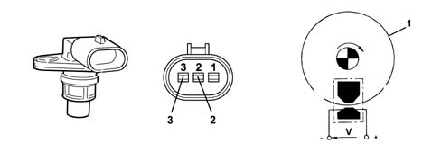
1. Pulley ring 2. Signal 3. Fuel system
EXCESS PRESSURE SENSOR
Specifcations
The intake air temperature and excess pressure sensor is a component which is designed to measure the pressure and the temperature of the air inside the inlet manifold.
It is fitted on the intake manifold has the task of notifying the injection control unit to:
- regulate the pressure of the variable geometry turbine in order to ensure optimum engine performance in all operating conditions.
- regulating injection duration.
1. Earth 2. Air temperature signal 3. 5 Volt (from engine management control unit) 4 Supercharging pressure output signal
ENIGINE COOLANT TEMPERATURE SENSOR
Specifcations
Type
It is fitted on the thermostatic cup and measures the temperature of the coolant by means of an NTC thermistor which has a negative resistance coefficient.
An NTC thermistor sends the signal to the engine management control unit which sends the signal for the indicator and the warning light in the instrument panel.
The sensor is based on semiconductor technology; so if the sensor temperature increases as the water temperature increases, the resistance decreases.
as the variation in resistance is not linear, for the same temperature increment, it is higher for low temperatures than for high temperatures.
AIR FLOW METER WITH AIR TEMPERATURE SENSOR INTEGRATED
Specifcations
Type
The flow meter is located on the air inlet duct and is of the 'hot film' type.
The intake air temperature sensor is built into the flow meter.
Operation
The operating principle is based on a heated diaphragm located in a measuring duct through which the intake air entering the engine flows.
The hot film diaphragm is kept at a constant temperature (about 120° C above the incoming air temperature) by the heating resistor.
The air mass passing through the measuring duct tends to draw heat from the diaphragm, so to keep the latter at a constant temperature, some current must flow through the resistor.
This current is measured by a suitable Wheatstone bridge.
The current is therefore proportional to the mass of flowing air.
Fuel temperature sensor
Specifications
It is built into the fuel heater and measures the temperature of the coolant by means of an NTC thermistor which has a negative resistance coefficient.
The sensor is based on semiconductor technology; so if the sensor temperature increases as the fuel temperature increases, the resistance decreases.
As the variation in resistance is not linear, for the same temperature increment, it is higher for low temperatures than for high temperatures.
FUEL PRESSURE SENSOR
Specifcations
It is fitted at the end of the 'rail' fuel distribution manifold and has the task of supplying the injection control unit with a 'feedback' signal to:
- regulate the injection pressure
- regulating injection duration.
1. Earth 2. Output signal 3. Fuel system
ACCELERATOR PEDAL POTENTIOMETER
Specifcations
Type
The accelerator pedal is fitted with two integrated potentiometers:
- one main one
- one safety one.
The engine control unit implements the following recovery strategies:
- if there is a fault with one of the two potentiometers, a throttle opening of up to 40° is allowed for a long period
- if both of the potentiometers fail completely, the throttle opening is excluded.
Operation
Introduction
The sensor consists of a casing, fixed to the pedals by bolts, which contains a shaft, in an axial position, connected to the two potentiometers.
There is a coil spring on the shaft which guarantees the correct resistance to the pressure whilst a second spring ensure the return on release.
Operating range from 0° to 70°; mechanical stop at 88°.